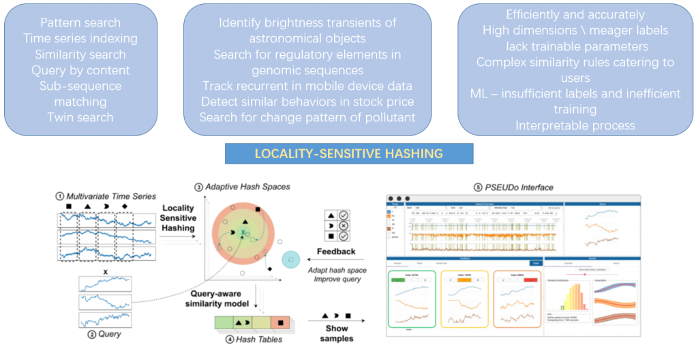
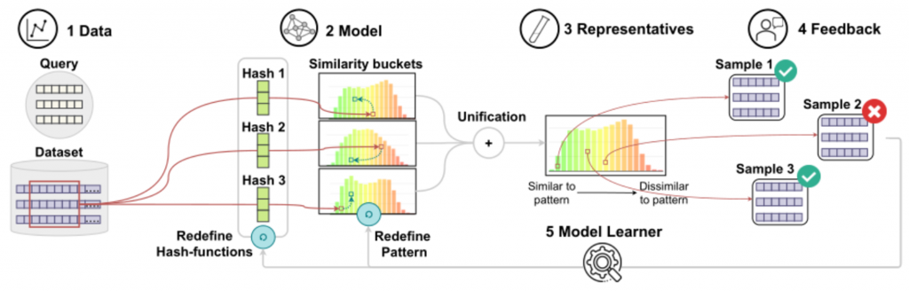
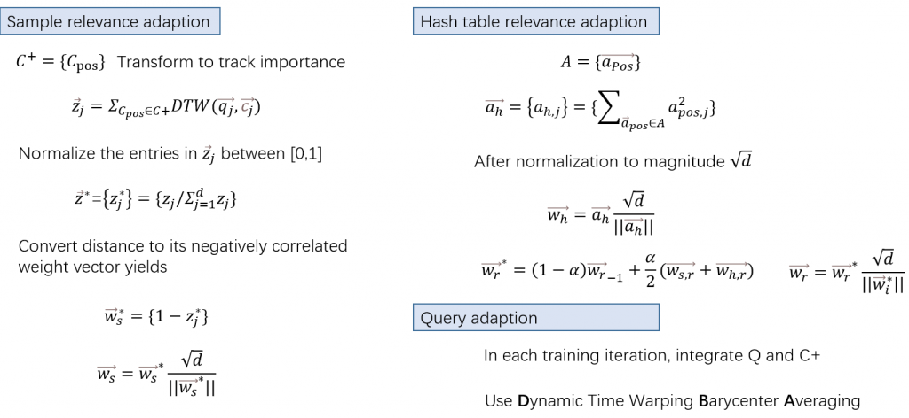
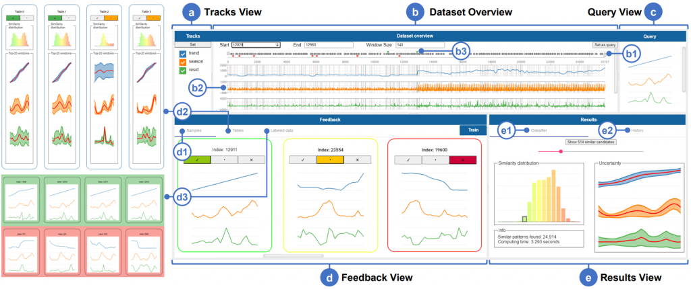
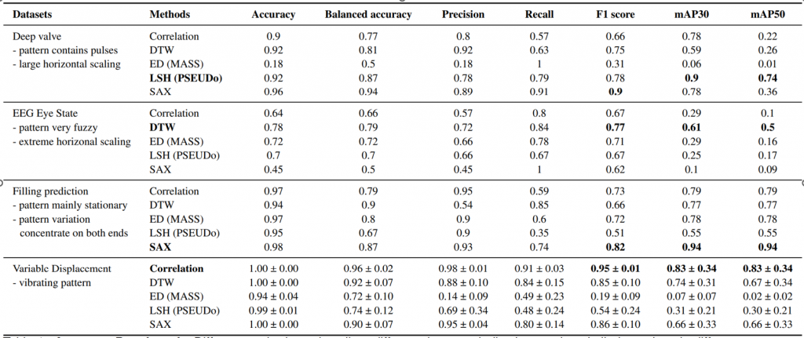
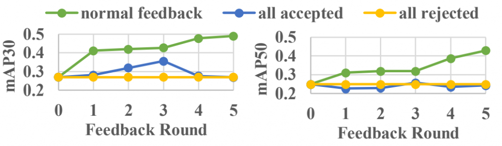

日期：2022年10月9日 作者：郝佳凝
2022年10月9日星期日下午，郝佳凝在组会中报告了论文《PSEUDo: Interactive Pattern Search in Multivariate Time Series with Locality-Sensitive Hashing and Relevance Feedback》，这篇论文提出了一个可视化的多变量时间序列模式检索工具PSEUDo，他的目的是检测高维时间序列中的模式，通过特征选择利用相关性反馈改进结果，并提供给用户一个利于理解和探索的检索过程。
在时间序列数据库中搜索与给定查询相似的模式是时间序列分析中最常见的问题，那么在不同的文献中，它有很多种叫法，比如模式搜索，时间序列索引，相似性搜索，按内容查询，子序列匹配，孪生搜索。该种方法可以解决很多现实世界的抽象问题， 比如识别天体的亮度瞬间变化，在基因组序列中搜索调节元素，跟踪移动设备中的重复事件，检测股票价格中的类似行为，识别空气污染物的变化模式。这些问题都需要我们能够高效地、准确地识别多变量时间序列中的模式。这项任务的挑战主要来源于较高的维度，贫乏的标签，高效的查询要求，相似度度量缺乏可训练的参数，如果我们为了迎合用户去为潜在的复杂相似规则建模会比较耗费时间；如果直接使用机器学习，可能会遇到标签不足和训练效率低下的问题。此外，一些应用中专家需要一个可解释的过程来辅助后续的分析，这种情况下使用机器学习模型可能也不是很合理。基于这个背景，本文选择使用位置敏感哈希(LSH)方法，它将所有的轨迹线性的映射为一个带有哈希函数组的轨迹，使得后续的处理根据数据维度可伸缩。这个文章的主要贡献是使得LSH具有可训练性，并通过一个有效的可解释的相关反馈机制来扩展他。图1的底部图展示了整个工作的流程：
步骤1，使用滑动窗口窗口归一化对时间序列进行预处理；步骤2，用户在时间序列数据库中搜索查询时，在时间序列中标记一个模式；步骤3，系统执行基于标准LSH的初始搜索；步骤4，用户在界面中检查查询结果并提供相应的反馈；步骤5，更新LSH模型，重新运行搜索；最后迭代步骤4到6，直到用户对查询结果感到满意

在设计系统前，该论文确定了四个设计需求。第一是快速反馈（R1)。作为一个查询系统，快速的结果回复是很必要的。所以他们认为基于优化的模型训练并不是首选，现有的工作认为欧式距离是最快的时间序列相似性度量，同时，LSH在处理高维时间序列中表现优异。所以本文选用LSH作为特征表示，ED作为相似性度量。第二点是适应的相似性度量(R2)。因为他们认为相似性的解释取决于样例，任务不同，用户需要搜索的内容不同，他们对什么是相似的定义就不同。但是所有用户可以从相同的查询开始，并不断的通过相关反馈机制来接近最优查询结果。第三点是可判断的过程(R3)。工程师们提出，在使用该系统时，他们希望能够自发地追踪和异常相关的信号。定位目标信号是工作的第一步，之后他们需要分析问题的根源，也就是找到与目标信号有因果关系的轨迹。针对这个问题，文章引入了一种基于特征选择的反馈机制。第四点是准确的检索(R4)。这个要求通常会与第一点和第四点冲突。想要各个方面都达到最好的表现是不可能的，所以作者选择在这一点上做出让步。查询结果的准确性取决与特征表示和相似度量。论文现在使用的LSH，已经被证明了有一定的精度牺牲。相似性方面也有工作说明DTW很难被击败，但是他们为了更快的计算与更多的数据获取，他们选择了ED作为主要的相似性度量选择。
LSH (Locality-Sensitive Hashing) 允许用户实时并高效的查询大型高维时间序列数据，该论文设计了一种可解释的相关反馈算法来对LSH进行了扩展，它的概念模型如图1底部图所示。输入MTS数据并使用LSH进行建模，并存储在支持查询的哈希表中，这样可以大大加快处理速度，同时，这样的机制可以促进查询过程，因为它可以学会理解用户地相似性概念并将其解释为特征地重要性。他们认为这种user-in-the-loop的主动学习方法可以提高整体的检索性能，并且依然具有一定的可解释性。

了解了概念模型后，我们来看具体的PSEUDo管道 （如图2，3所示）。该模型接受一个查询Q和预处理的长度为n的d维时间序列S作为输入，并通过一个与Q长度一致的滑动窗口（如红框所示）对S进行分区。第二步是初始化l个复合哈希函数，每个复合哈希函数都有K个哈希函数h组成，每个哈希函数h都是一个独立于正态分布的向量初始化出来的。将输入哈希到哈希表桶中，表示与查询的相似度分布，哈希桶的绿色表示相似，红色表示不相似。在时间序列窗口X中，每个哈希函数h计算自己的向量与时间步之间的点击，从而将X中的多条履带合并为长度为t的单变量哈希码（可以看成将多变量时间序列窗口哈希为单变量哈希码）。修剪包含查询的哈希桶之外的窗口后，根据相似性度量对其余窗口与查询的相似度进行排名，在这里它使用了相似性度量来计算所有候选查询的相似性，我们可以发现，他们的方法将相似性度量应用于候选散列代码而不是时间序列窗口，这样做的好处是1.相对于轨迹数复杂度，由线性降低为常数，2.相似性度量基于LSH的表示，表示后续可以更新，可以反映用户的重点。第三步，从相似桶，不确定桶和不相似桶中分别提取representatives。第四步，接受用户的反馈，并最后相应的更新哈希函数和查询模式。该方法允许用户对样本和散列表给出feedback。
在模型的更新中，本文建议使用学习到的权重向量w来修改哈希向量a的方式来接受反馈并优化。PSEUDo允许两种类型的相关性反馈，即对候选样本和哈希表的反馈相应的，他们分别对样本和哈希表维护两个权重向量ws和wh，其计算方式总结如图4所示：

其可视化界面如图5所示。用户从视图ab中选定模式并查询；反馈视图d描述了分类结果样本和关于哈希表的信息，并用于接收相关反馈；结果视图e显示结果分布并提供搜索历史管理。C显示了用户定义的多元查询代表，用户在b中选择一个区域，以案例查询的方式定义查询，用户可以动态地更改查询，每当查询大小变化时，PSEUDo必须重复散列过程。这五个相互关联的视图方便数据探索，查询定义，过程检查，反馈和状态管理。针对反馈界面，d1列出了分类的样本。它们被从绿到黄到红的颜色编码包围，表明查询的相似度在下降。在样本的正上方，系统邀请用户通过点击相似，不确定和不相似来标记窗口，来实现反馈。在tables选项中，系统会可视化哈希表（d2），每个哈希表都可视化为一个直方图，显示哈希函数感知到的相似度分布。这里的柱状图也是用颜色编码的，从绿色到红色，表明查询的相似度在下降。平均值曲线描绘了哈希函数认为相似的模式形状，而最小值和最大值形成了模式的下限和上限。波段的紧密程度暗示了分类过程中轨迹的确定性或重要性。基于这种可视化编码，用户可以通过点击重要和不确定来修改哈希表的重要性。当前回合的标签窗口保存在标签数据选项卡中(d3)，用户可以在点击train之前修改，PSEUDo将在下一轮训练中考虑带标签的示例。结果视图中，分类选项中，使用结果直方图来可视化查询和LSH修建后幸存的所有窗口之间的相似度分布。点击直方图的一个方框，将显示与反馈视图中类似的重构视觉模式。这个模式结果视图总结了所选容器中的所有窗口。平均曲线还显示了该容器内的平均形式，以每个实践部的最小值和最大值为界，说明轨迹内的方差。这种重构后的形状有助于用户更好的理解分类结果。

本文通过三个不同的评价线程来评估PSEUDo,首先，用代表性的技术对时间序列模式查询的准确性和速度进行基准测试。其次，验证了相关反馈机制(R2)的可导向性。第三，通过采访来自能源领域的专家来验证可用性，包括可理解性(R3)。通过使用DTW, MASS和符号聚合逼近三种方法来对提出的工具进行基准测试。除了逐级分类指标精度、平衡精度、精度、召回率和F1得分外，本文还从计算机视觉中的目标检测中借用了平均精度(mAP)的度量平均值，以支持分段视角。图6中展示了基准测试的结果，可以看出不同的方法在不同的数据集上表现不同，这意味着我们需要自适应的相似度量方式。

该准确性测试中没有用户反馈的参与，该论文通过准确性和跟踪重要性演化来验证了相关反馈机制的有效性，设置了三个模拟用户行为的代理来评估他们的可控制性。第一个模拟正常的用户反馈，并根据事实标签对样本进行标记，如果一个样本至少有50%的IOU并带有ground truth标签，它就会被接受。第二个模拟用户会接受所有的样本，第三个模拟代理人会拒绝所有的样本。这三组形成了对照组。本文选择了EEG EYE数据集进行实验并进行了五轮反馈，记录了精度和轨迹权重的变化。图7展示了三种方式的五轮反馈的精度标准MAP30和MAP50，证实了合理的反馈是能够帮助提高判伪的准确性。

总结来说，PSEUDo结合了三个方面，让它能够更好的在现实应用中探索MTS数据。首先，与基于静态深度学习的一次性方法相比，它实现了自适应分类，使其成为以用户为中心的可视化分析方法。其次，该方法利用了一种最可扩展和最有效的数据处理技术:基于哈希的算法。第三，实现的“桶”概念很容易理解，能帮助不太熟悉ml应用程序环境的用户快速适应PSEUDo。